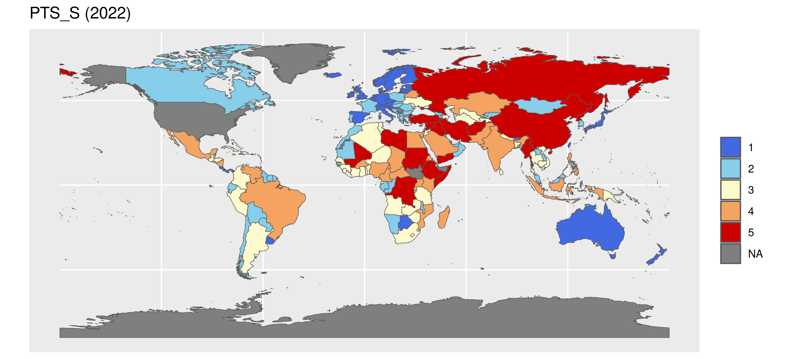
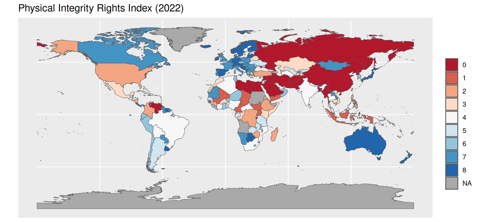
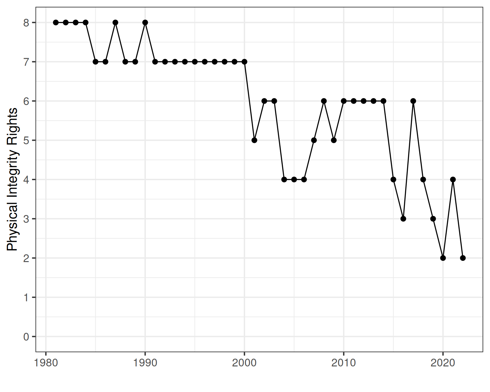
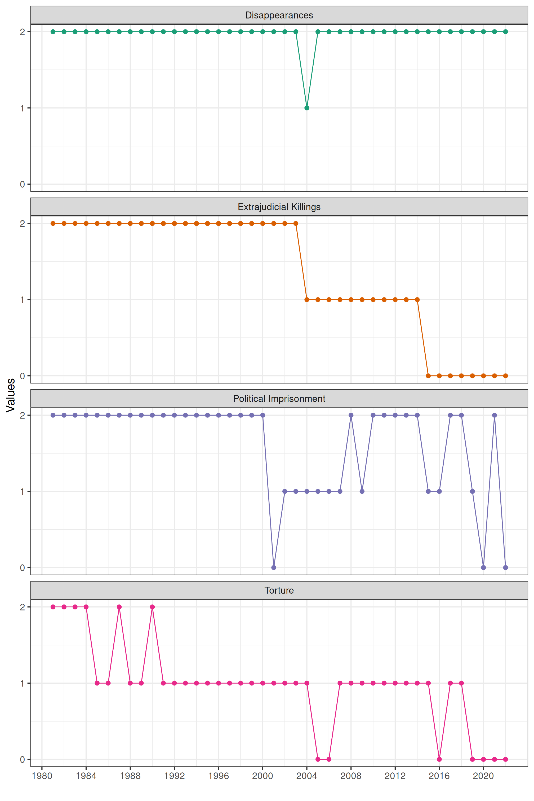

| Source | N | Missing | Missing (%) |
|---|---|---|---|
| Disappearances | 195 | 0 | 0% |
| Extrajudicial Killings | 195 | 0 | 0% |
| Political Imprisonment | 195 | 0 | 0% |
| Torture | 195 | 0 | 0% |
II. How and why do governments use violence against the people inside their borders?
Justin Leinaweaver (Fall 2025)
Which SINGLE data source would you recommend to someone interested in better understanding the use of political violence by governments around the world?
Your thesis should be a clear recommendation for ONE of the sources and should be supported by AT LEAST THREE distinct reasons for your recommendation
A high quality recommendation will also make clear why you are not recommending the other sources
Sources of Political Violence Data
The US State Department’s “Country Reports on Human Rights Practices”
Amnesty International’s “Annual Country Reports”
The Political Terror Scale (PTS)
The CIRIGHTS data project’s “Physical Integrity Rights”
Varieties of Democracy’s (V-Dem) “Personal Integrity Rights”
Exploring the CIRIGHTS Data Project
Evaluate the codebook
Evaluate the data
“…government respect for human rights (p2)”
Measuring “Physical Integrity Rights” (CIRIGHTS)
Operationalization
↓
Instrumentation
↓
Measurement
Disappearance
Extrajudicial Killing
Political Imprisonment
Torture
Measuring “Physical Integrity Rights” (CIRIGHTS)
“Disappearances are cases in which people have disappeared, agents of the state are likely responsible, and political motivation may be likely” (p8).
Measuring “Physical Integrity Rights” (CIRIGHTS)
“Extrajudicial killings are killings by government officials without due process of law” (p6).
Measuring “Physical Integrity Rights” (CIRIGHTS)
“Political imprisonment refers to the incarceration of people by government officials because of their speech; their non-violent opposition to government policies or leaders; their religious beliefs; their non-violent religious practices including proselytizing; or their membership in a group, including an ethnic or racial group” (p13).]
Measuring “Physical Integrity Rights” (CIRIGHTS)
“Torture refers to the purposeful inflicting of extreme pain, whether mental or physical, by government officials or by private individuals at the instigation of government officials” (p11).]
Measuring “Physical Integrity Rights” (CIRIGHTS)
Disappearance
Extrajudicial Killing
Political Imprisonment
Torture
| Source | N | Missing | Missing (%) |
|---|---|---|---|
| Disappearances | 195 | 0 | 0% |
| Extrajudicial Killings | 195 | 0 | 0% |
| Political Imprisonment | 195 | 0 | 0% |
| Torture | 195 | 0 | 0% |
Correlations Across the Measures
| Disappearances | Extrajudicial Killings | Political Imprisonment | Torture | |
|---|---|---|---|---|
| Disappearances | 1.00 | 0.51 | 0.49 | 0.49 |
| Extrajudicial Killings | 0.51 | 1.00 | 0.50 | 0.59 |
| Political Imprisonment | 0.49 | 0.50 | 1.00 | 0.57 |
| Torture | 0.49 | 0.59 | 0.57 | 1.00 |




Exploring the V-Dem “Personal Integrity Rights” Scores
Evaluate the methodology / codebook
Evaluate the data
OLD SLIDES
Have the average rates for the types of violations varied across time?
Focus on the scores for total index score in the years since 2001 and find us other examples of countries that have:
Improved the most, and
Regressed the most across the years in the sample